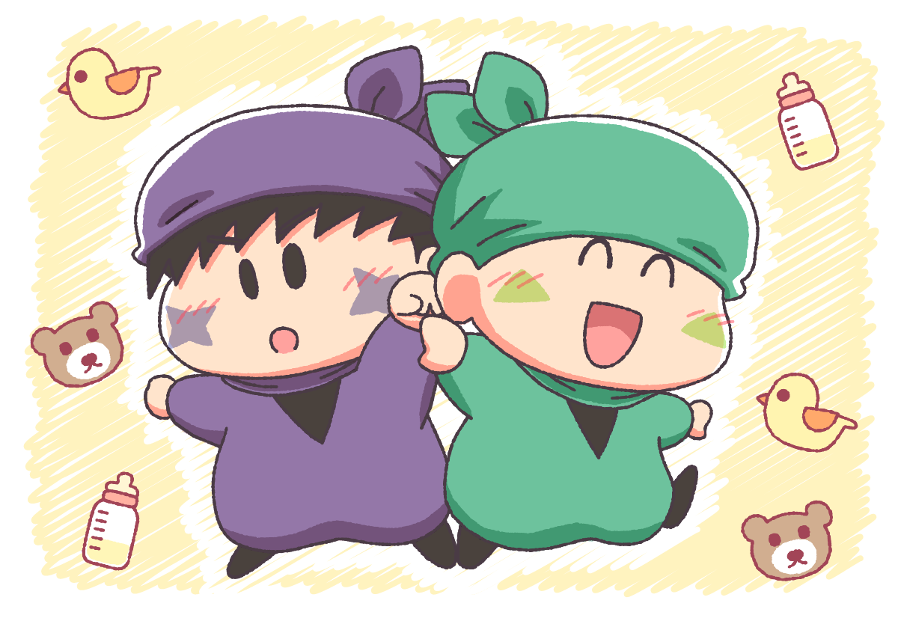
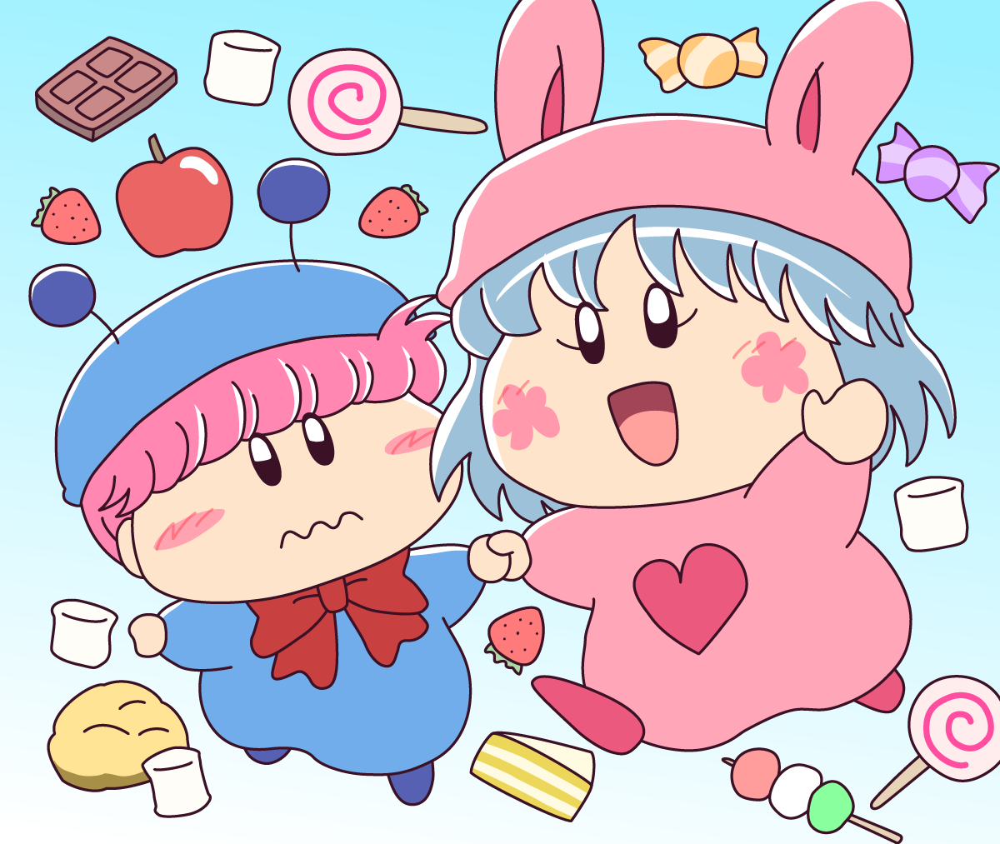
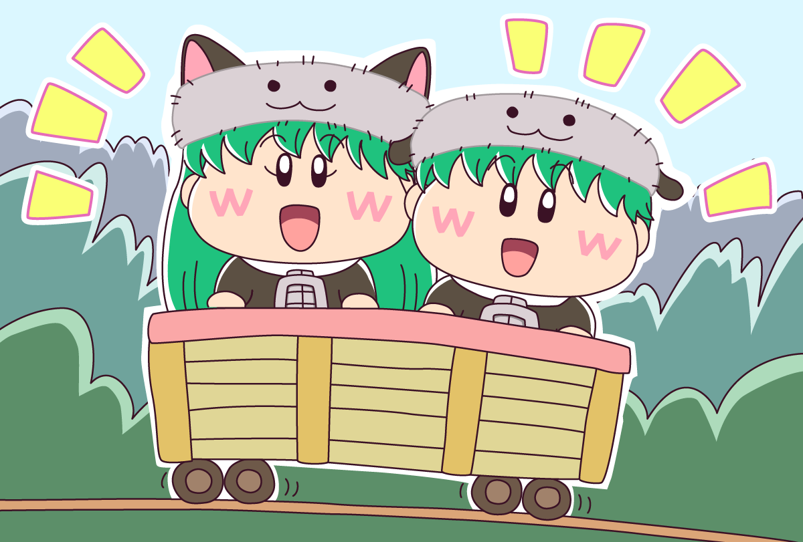

2023年前半に描いた仲良し妖精たちの絵をまとめます。
仲良し妖精大好きな私なので定期的に描きたくなるのですよね(^^)

サスケ「オイラたちは赤ちゃんじゃないぜ！」
ハンゾー「そうなのら〜。トドラーなのら〜」
※トドラーとは「よちよち歩きの子ども」を意味します。つまり赤ちゃんですね(^◇^;)
ちなみに絵の元ネタは、舞台ミルモでポンが発表されたときに、ニアジョイさんが二人の妖精忍者のことを赤ちゃんと言っていた…になります。

2023年のムルパピ（いつも通り）
パピィ「ムルモはいつも暇そうだからあたちが遊んであげる」
ムルモ「なんなんでしゅか！？ ボクは一人でいるのが好きなんでしゅ〜っ」
（ムルモは本当は退屈していて遊び相手もいなかったので、誘ってくれたのがちょっとうれしかったりします）

双子の妖精のアンリとセンリ。
仲良しの二人はいつもいっしょ😊
(2023/7/22)